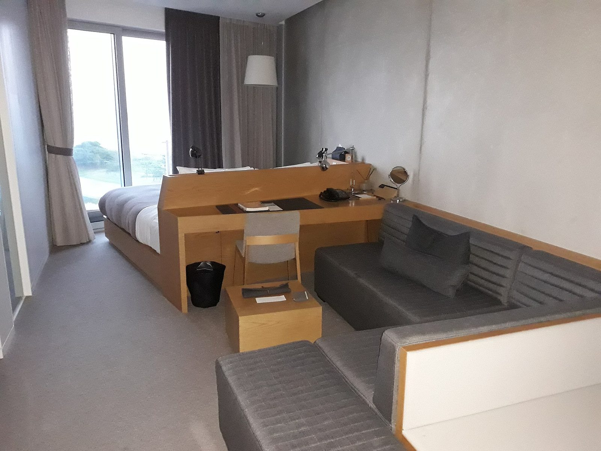

Incheon · Stay
Nest Hotel Incheon: A Seaside Stay on Yeongjong Island
By Korea Plainly · Published · Updated

Photo: H. Y. Shin 000, CC BY 4.0, via Wikimedia Commons
At a glance: Nest Hotel Incheon is a waterfront hotel on Yeongjong Island, worth a stay for its sea views, outdoor pools and restful setting.
Visiting Nest Hotel Incheon
- Region
- Incheon
- Address
- 19-5 Yeongjonghaeannam-ro, Jung-gu, Incheon
- Google rating
- 4.3/5 from 3,961 reviews (October 2026)
Opening hours, prices and closures change. Check the map before you go.
What it is
Nest Hotel Incheon is a contemporary hotel on the coast of Yeongjong Island, in Incheon. It makes a good choice if you want a quieter, resort-like break by the water, or a comfortable base near Incheon International Airport. Rather than the busy streets and late-night energy of central Seoul, the mood here is about slowing down and enjoying the surroundings.
The building’s modern design pairs concrete surfaces and clean lines with broad views of the coast. The setting is especially appealing when the light changes in the evening: this is Korea’s west coast, where the sun sets over the sea. The hotel has restaurants and bars, a gym and outdoor pools, so you can spend much of your visit on site. Nest Hotel has a 4.3 Google rating from 3,961 reviews.
For first-time visitors, it helps to think of Nest as a destination stay, not simply a place to sleep between sightseeing stops. Its island location gives you a different side of Incheon from the city’s historic districts: open coastal scenery, beach outings and an easygoing resort atmosphere.
What to see, do or order
Start with the view. Look out toward the water from the hotel’s public spaces, or settle in for a while and watch the colours shift toward sunset. The nearby shoreline and open skies make the setting feel spacious, especially if you have spent the day in the city or travelling.
The outdoor pools are one of the hotel’s main draws. They make the most sense as part of a relaxed hotel stay: leave time to swim, enjoy the outdoor setting and take a break from a tightly packed sightseeing schedule. Pool access and arrangements can vary, so check the hotel’s current details before you plan around a swim. The gym gives you another option if you want to keep up your routine.
There are restaurants and bars at the hotel, which is convenient when you would rather stay in than head out to find dinner. It is a comfortable place to enjoy a meal or a drink without turning the evening into another long outing. Check the current dining options before choosing the hotel specifically for a particular kind of meal.
If you have more time, use Yeongjong Island as part of the experience. You can pair a hotel stay with a visit to one of the island’s beaches, such as Eurwangni Beach or Masian Beach, or explore the airport-area resort complex at Paradise City. These make a coastal Incheon trip feel distinct from a visit focused on central Seoul.
How to plan your visit
Plan for an overnight stay if you want time to enjoy the pools, hotel facilities and sunset without watching the clock. A shorter stop can still work for a meal or a pause during an airport-area visit, but the hotel’s strongest appeal is the chance to settle in rather than rush through. Allow extra time if you are combining it with a beach or another island stop.
Late afternoon is a particularly rewarding time to arrive: you can get settled, enjoy the coast in the changing light and have dinner on site. Daytime suits pool time and outdoor plans, while a clear evening offers the best chance of seeing a west-coast sunset. Weather can shape the experience, so keep your plans flexible if you are counting on time outside.
Nest Hotel is at 19-5 Yeongjonghaeannam-ro, Jung-gu, Incheon. Yeongjong Island is connected to the mainland, but it is not a convenient base for every Seoul itinerary. If you are visiting Seoul’s central neighbourhoods, consider staying in the city for those days and treating Nest as a separate coastal stay. For an airport-area trip, check your route and transport options in advance, especially if you are travelling with luggage or need to meet a flight.
Good to know
Pack swimwear if you intend to use the outdoor pools, and bring a light layer for time by the water when the evening breeze picks up. If you are travelling with children or planning a pool-focused stay, confirm the hotel’s current access arrangements and any facility rules directly before booking. The hotel’s official website is the best place to check current facilities and dining information.
Keep your schedule simple. A beach walk, a relaxed meal and time to enjoy the hotel are a better fit here than trying to squeeze in a long list of distant sights. If you want to explore further around Yeongjong Island, check routes between stops before setting out.
FAQ
Is Nest Hotel Incheon a good base for visiting Seoul?
It is better suited to an airport-area or coastal stay than to sightseeing in central Seoul. Choose a city hotel if most of your plans are in Seoul’s central neighbourhoods.
Does Nest Hotel Incheon have a swimming pool?
Yes. The hotel has outdoor pools. Check current access arrangements with the hotel before planning your visit around them.
What can I combine with a stay at Nest Hotel?
Make time for Yeongjong Island’s coast, including beaches such as Eurwangni or Masian, or visit the nearby airport-area resort complex at Paradise City.